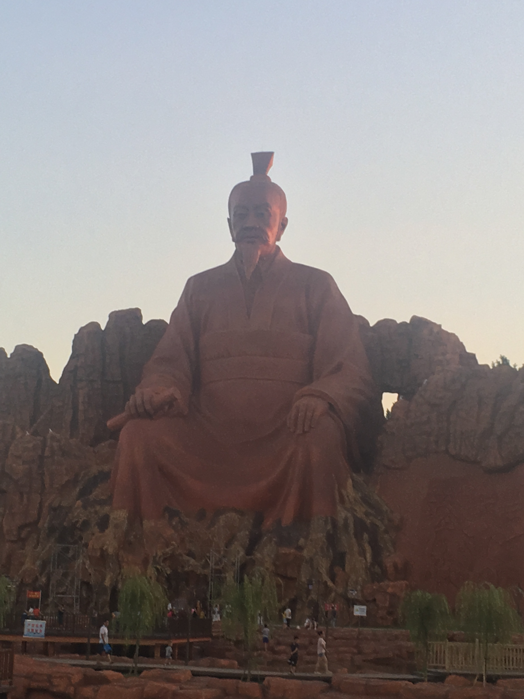

余干县，隶属于江西省上饶市，位于江西省东北部，东与万年县接壤，西连南昌、进贤县，南与余江县、东乡县毗邻，北邻鄱阳县、都昌县。国土面积2331平方公里，地貌以低丘和滨湖平原为主，地势东南高，西北低，由东南部丘陵向西北缓慢倾斜，过渡到湖滨平原。纵贯全境的信江分东西支流注入鄱阳湖，基本构成为“四水三山二分田，一分道路和庄园”
余干县冕山位于该县城东南2.5公里处，面积1.2平方公里，由于长期以来的无序开采和垃圾填埋，导致冕山山体残破、植被损毁、岩石裸露、垃圾成堆，生态环境遭到严重破坏。为修复冕山生态环境，余干县投入1.2亿元在此建设占地约1100亩，集生态、旅游、休闲、文化展示为一体的冕山公园。据悉，该公园将依托冕山现有地貌打造入口功能区、文化展示区、安静休闲区、儿童活动区、登高揽胜区、峡谷景观区、植被抚育区等七区，以及石壁迎宾、干越遗风、花影层台、锦色年华、松风竹影、半山小憩、凭风揽胜、竹径通幽、峡谷野趣、石影清池、花石流芳、荷风柳韵等十二景。 